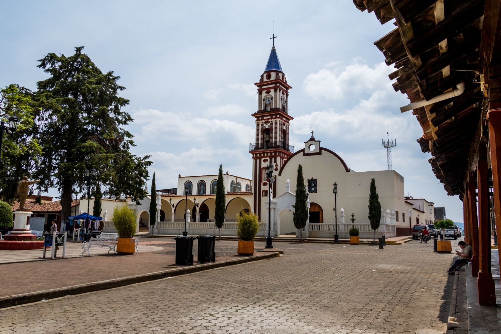
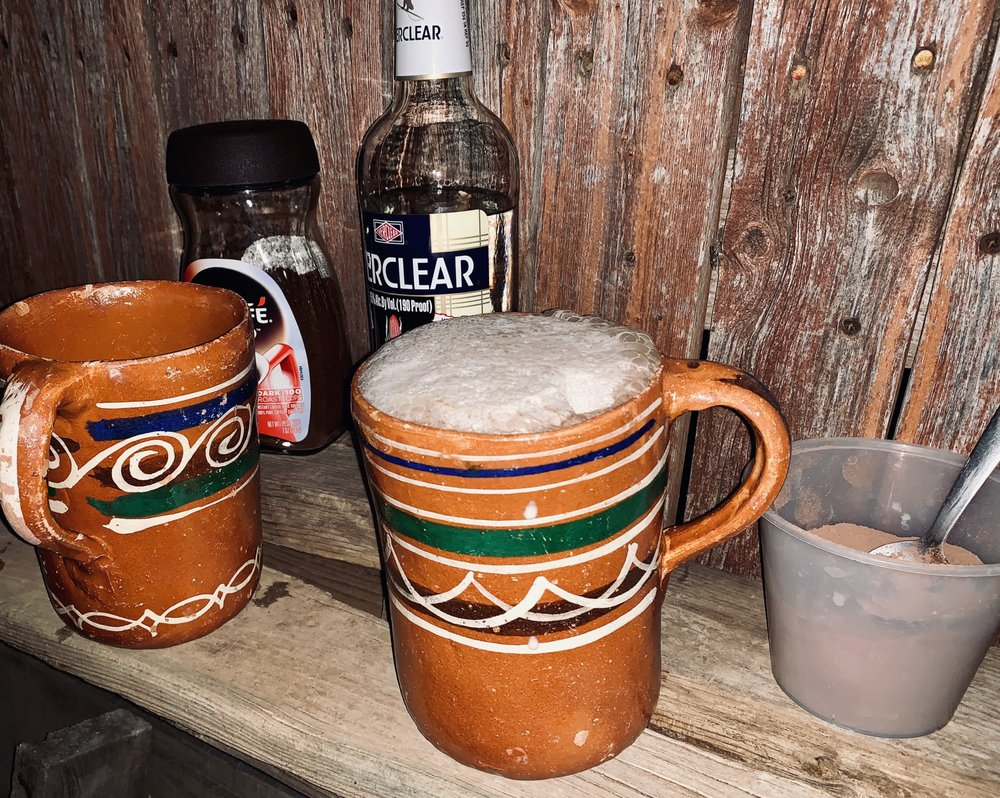

The weather in Concepción de Buenos Aires is usually very sunny. The people are very nice and friendly. The food in this town is very good. There are many tourist spots to visit. Lots of parties around the winter time. Also there are lots of sports competitions to attend to. Every weekend people walk around the plaza and have a good time with friends and family. Lots of farms and parks to visit and there isn't much traffic.
There are many activities to do in Concepción de Buenos Aires. One of many activities to do is going to the local park and have a stroll or exercise. There are usually many soccer matches going on throughout the year which I personally love to attend. In the mornings there is a favorite activity of many that occurs which is milking a cow and adding the milk in a cup with alcohol. This drink is called Pajarete. There are many restaurants and places to eat around Concepción de Buenos Aires, if you're into Mexican food and trying out food.
